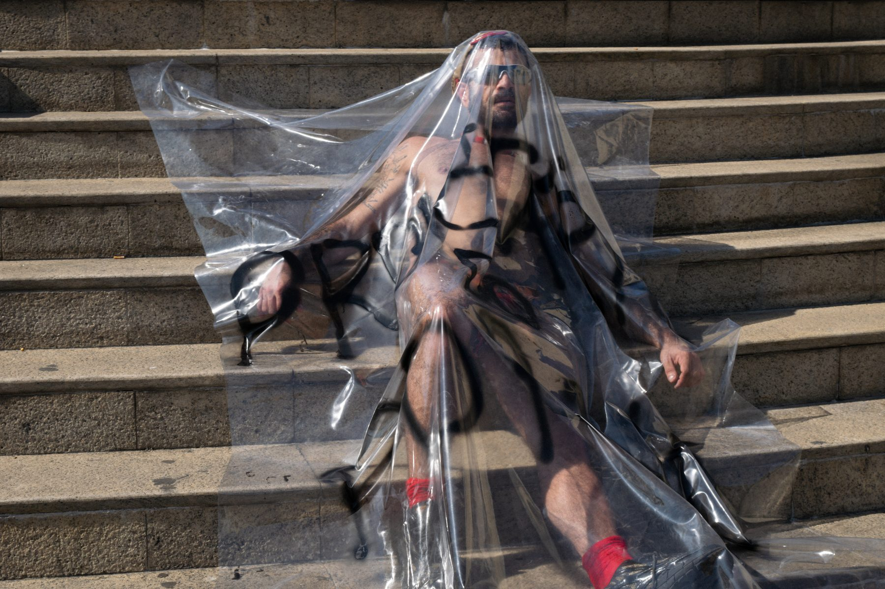

Proletário do pornô
La pornografía es como un espejo en el que podemos mirarnos. A veces, lo que vemos no es muy bonito y nos puede hacer sentir bastante mal. Pero es una ocasión maravillosa para conocerse a sí mismo, para aproximarse a la verdad y aprender. La respuesta al porno malo no es la prohibición del porno, sino hacer mejores películas porno.
- Retrato@fernando.brutto
- Producción@caianrangel
- Fotografía@ezeruludo
- Ropa@masonbuenosaires


